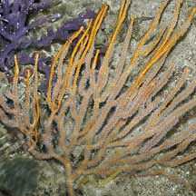
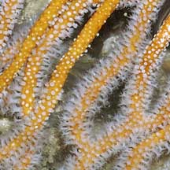
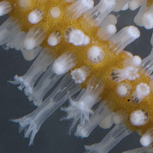

|
|
|
gorgonian
text index | photo
index
|
| Phylum Cnidaria > Class Anthozoa > Subclass Alcyonaria/Octocorallia > Order Gorgonacea |
| Candelabra
sea fan Euplexaura sp.* Family Plexauridae updated Dec 2019 Where seen? This orange sea fan with U-shaped branches that resemble a candelabra are often seen on a wide range of Northern shores, including Changi and the East Coast. On rocks and coral rubble near the low water mark. Features: 10-15cm tall. Colony generally branched on one plane, the branches are sparse and rather long, emerging in a U-shape so the entire colony resembles a candelabra. But some with very long stems may appear tangled. Stems cylindrical with rounded tips, all stems about the same diameter. Colours usually orange, although the colony may appear whitish if the polyps are fully expanded. The white polyps are relatively large (0.5cm) and emerge all around the stem. The white polyps can retract completely into the stem. Animals seen on the sea fan include Winged oysters, tiny colourful brittle stars and squid egg capsules. |
|
 Beting Bronok, May 06 |
 |
 Tuas, Dec 11 |
*Species are difficult to positively identify without close examination.
On this website, they are grouped by external features for convenience of display.
| Candelabra sea fans on Singapore shores |
On wildsingapore
flickr
|
|
Links
References
|